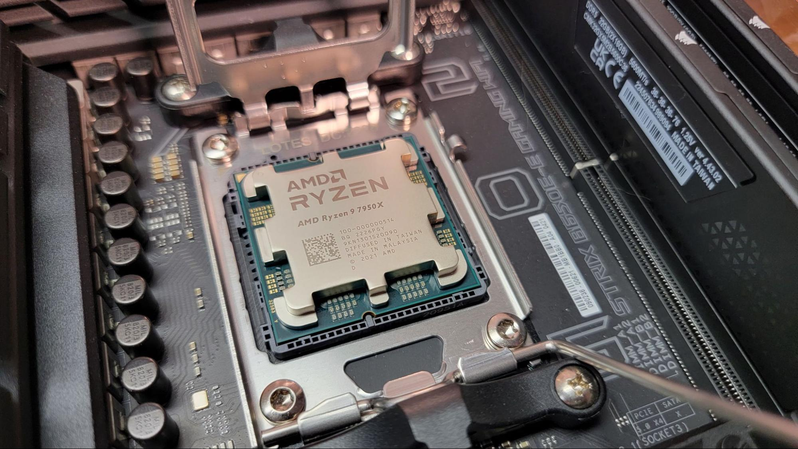

Покрокова збірка ПК
Порядок може трохи відрізнятися залежно від корпусу, але загальна послідовність така.
Підготовка
- Підготуйте чистий стіл, викрутку та всі комплектуючі. Інструкції до материнської плати та корпусу залишайте під рукою.
- Перед роботою торкніться металевої частини корпусу, щоб зняти статичний заряд.
Встановлення компонентів на материнську плату
Зручніше виконувати ці кроки, поклавши плату на коробку від неї, ще до встановлення в корпус.
-
Процесор. Підніміть фіксатор сокета, сумістіть ключ-трикутник на процесорі зі сокетом і опустіть процесор без зусиль. Закрийте фіксатор.

Процесор встановлюється без натискання, він сам лягає в сокет. - Оперативна пам'ять. Вставте модулі у відповідні слоти (їх порядок вказано в інструкції до плати) до характерного клацання фіксаторів.
- M.2 SSD. Вставте накопичувач у роз'єм під кутом і закріпіть гвинтиком.
- Кулер процесора. Зніміть захисну плівку з підошви кулера, за потреби нанесіть термопасту та закріпіть кулер згідно з інструкцією.
Монтаж у корпус
- Встановіть блок живлення в корпус і закріпіть гвинтами.
- Переконайтеся, що стійки (standoffs) у корпусі збігаються з отворами материнської плати, та закріпіть плату.
- Встановіть відеокарту в верхній слот PCIe x16 та закріпіть її гвинтами на задній панелі корпусу.
- Встановіть накопичувачі 2,5″ або 3,5″, якщо вони є.
Підключення кабелів
- Основне живлення материнської плати (24-pin).
- Живлення процесора (4+4 або 8-pin) у верхній частині плати.
- Додаткове живлення відеокарти (PCIe), якщо воно потрібне.
- SATA-кабелі для накопичувачів і живлення SATA.
- Передня панель корпусу: кнопка живлення, USB, аудіо.
- Вентилятори корпусу.
Перший запуск
- Ще раз перевірте всі підключення та приберіть зайві кабелі зі шляху вентиляторів.
- Підключіть монітор до відеокарти, клавіатуру, мишу та живлення, потім натисніть кнопку увімкнення.
- Зайдіть у BIOS, перевірте, що всі компоненти визначилися, і за потреби ввімкніть профіль пам'яті (XMP або EXPO).
- Встановіть операційну систему з завантажувальної флешки.